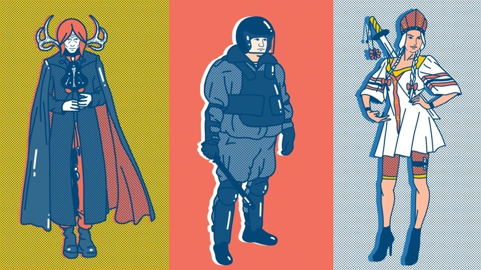
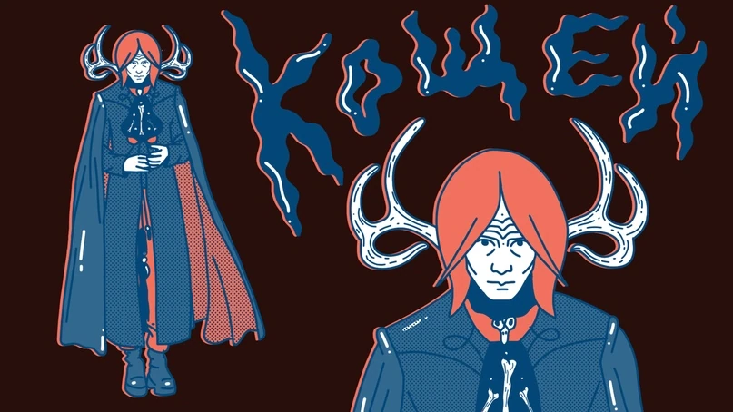
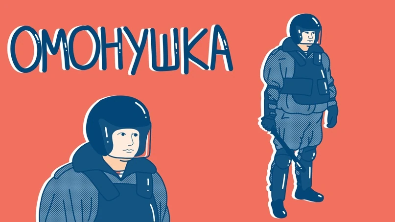
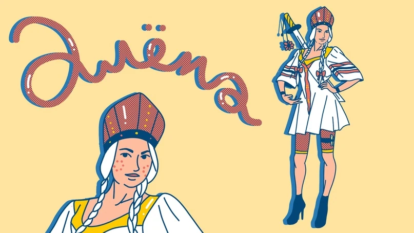

Александр Сорге — о кризисе Marvel, славянских кибербогатырях и том, почему постылый вкус кинокомиксов можно улучшить клюквенной кислинкой
Буквально через месяц вселенной Marvel исполняется 80 лет, и ей-богу, я не удивлюсь, если в этот знаменательный день Стена Ли объявят пророком. Ибо помимо него такое количество писаний о летающих чудотворцах оставила еще лишь парочка мессий, за оскорбление которых сегодня можно получить срок и нож в печень от особо ярых фанатов ветхозаветных супергероев.

Я уверен, что голливудские кинопродюсеры уже ставят свечки лику этого улыбчивого старца в солнцезащитных очках. Ведь столько бабла, сколько приносят им герои величайшего пророка масскульта, не зарабатывают даже торговцы народным опиумом всех сортов и видов. Однако, похоже, что свечек нужно ставить больше. Недавно жрецы Marvel объявили о своих планах экранизировать еще одну пачку священных писаний про мужиков, женщин и одного трансгендера в латексных трусах, объявив тем самым о наступлении великой Четвертой фазы.
Создается впечатление, что вся эта цветастая жвачка стала приторной даже для западного зрителя.
Давайте начистоту: переплюнуть последние две части «Мстителей» в плане зрелищности, масштабности и красочности происходящего на экране будет практически невозможно. А в очередной раз смотреть на похождения одних и тех же героев просто-напросто скучно. И я сейчас не про Черную вдову или Доктора Стрэнджа, а про свежих для зрителя Шан-Чи и бисексуальную Валькирию. Да, их нарядят в трусы другого цвета. Но начинка этих пестрых костюмов почти наверняка будет той же, что и раньше: щепотка «смищных» шуточек, суперсила на выбор и запатентованный несгибаемый стержень внутри, приправленный чувством благородства. Стоит лишь добавить немного расовых и секс-меньшинств, выложить сюжет на трагический бэкграунд персонажа — и новый фильм можно подавать разогретой публике.
Марвеловские киношники никогда не славились особой любовью к раскрытию персонажей, по шаблону просто прикручивая к герою парочку личных трагедий в прошлом. Иногда это смотрелось сносно, иногда — просто-напросто абсурдно. Когда в третьем фильме про Железного человека образ «гения, плейбоя, миллиардера и филантропа» попытались оживить, привинтив к нему панические атаки и размышления об ответственности за будущее и близких, это выглядело совсем шизофренично. То Тони Старк ловит флешбэки, размышляет над битвой за Нью-Йорк, ссорится с Пеппер и ночи напролет работает в мастерской в попытках забыться. То пафосно бросает вызов террористу в своей обычной манере, называя адрес дома, где он живет со своей возлюбленной. Благо к концу фильма режиссер кладет на раскрытие персонажа железный болт, и все возвращается на круги своя: мы снова видим того же Старка, которого был в первом фильме.
Да, глупо лепить из мстителя в маске какого-нибудь Раскольникова. Да и, откровенно говоря, предыдущие фильмы Marvel и без этого получались сочными и вкусными. Но в новой фазе забить на проработку героя не получится: эффект новизны уже не будет работать. И «новые» герои могут получиться такими же штампованными, как и их пластиковые фигурки с китайской фабрики. А сами фильмы — банальными агитками для прогрессивной общественности. И очень вероятно, что так и выйдет: фильм про чернокожего супергероя был, про радфеминистку тоже — осталось штампануть сольники про азиата и члена ЛГБТ-сообщества, чем студия, собственно, и занимается.
Нет, конечно, у Marvel выйдет добротный аттракцион, и наверняка этот аттракцион окупится в прокате. Но это сравнимо с какими-нибудь крутыми американскими горками. Да, круто. Да, порой захватывает дух. Но не 13 же раз подряд на них кататься.
В любой киновселенной супергерой — заложник собственного амплуа. Железный человек не мог внезапно сделаться циничным мизантропом и снова начать продавать оружие. Причем каким-нибудь колумбийским повстанцам, потому что дела у «Старк Индастриз» после разгрома Нью-Йорка идут не очень.
В отличие от вселенной классических бумажных комиксов. Супермен становится генсеком компартии СССР? Почему нет. Капитан Америка попадает в 1587 год, где «Карлос Хавьер» создает школу для «ведьминых отродий», а по стенам средневековой Франции ползает «Питер Паркуа»? Черт возьми, да! Старина Альфред оказывается не чопорным британцем, а бывалым морпехом, и вытаскивает неопытного Бэтса из передряги при помощи шотгана? Все Мстители вдруг становятся зомби? Да, да и еще раз да! Мультивселенность — та самая аварийная кнопка АЗ-5, которая магическим образом перезагружает плоские или просто устаревшие образы супергероев, позволяя вдохнуть в них новую жизнь. Именно эта «кнопка» превратила клоуна в костюме летучей мыши в нуарного и циничного мстителя, а Капитана — из карикатурного законника в прожженного ветерана.
Концепция мультивселенности позволяет комиксам оставаться такими популярными почти уже 100 лет. Ведь она, по сути, развязывает авторам руки, позволяя действовать смелей, по-новому переосмыслить персонажей. Киношники же позволить себе подобной вольности не могут, ибо тогда цельный мир просто превратится в набор разрозненных фильмов. Из-за этого и без того затасканный образ начинает понемногу выдыхаться.

Единственный выход из этого положения — развивать героя внутри его амплуа. Усложнять образ (будь то миллиардер-остряк или же донельзя правильный рыцарь со звездой на груди), тем самым продлевая жизнь как персонажу, так и всей вселенной. И это тоже смотрится круто. Взять хотя бы «Старика Логана» или «Гражданскую войну», где ты, наконец-то, видишь, что «сверхлюди» — в первую очередь «люди» и только потом — «сверх». Перед Роджерсом и Старком встает действительно интересный вопрос ответственности за свои поступки, который раскрывает их характеры лучше, чем все сольные фильмы вместе взятые. Брать ответственность на себя и действовать так, как ты считаешь правильным, делать меньшее зло ради всеобщего блага или же подчиняться правилам, ведь в противном случае ты ничем не будешь отличаться от линчевателей? Ответ на этот вопрос в жанре супергероики смотрелся бы очень эффектно. Как конфликт Старка и Роджерса изменит вселенную? Как герои преодолеют разногласия ради общей цели? Как их противоречия повлияют на остальных героев? В конце концов, что они все будут делать после великой битвы? Правда, сценаристы на все вопросы ответили довольно прозаично: никак, будто бы никакого конфликта и не было. Нет, сами Мстители от этого ничего не потеряли, но и задела на будущее больше не осталось. Герои полностью себя изжили, и, по сути, на них можно ставить точку.
В сущности, у киношников остался единственный прием, чтобы хоть как-то разнообразить вселенную: смена сеттинга и флирт с другими жанрами. Но и тут возникает проблема. Фильм-катастрофа с падающими небоскребами? Было. Космоопера с разноцветными бабами? Тоже было. Полушпионский триллер с долькой теории заговора? Донельзя политкорректная агитка с реверансом в сторону всех униженных и угнетенных? Новое проч��ение древних мифов, параллельные миры, пропитанные колдунством и населенные волшебниками? Было, было, было. Marvel больше нечего предложить в рамках этой вселенной — она выжата до нитки. Хорошо бы совершить новый перезапуск, но продюсеры, обильно и ярко кончив, зачем-то продолжают насиловать полумертвый труп. На DC надеяться пока что не стоит, ибо с хорошими фильмами у них тоже пока туго. Но и хранить жанр кинокомиксов рановато, ибо помощь может прийти из заснеженной сибирской тайги.

Русский Ivan всегда привносил в повествование бодрящую клюквенную кислинку, и нет другого персонажа, который так бы оживлял сюжет. Благодаря 50 годам заклятой дружбы и частым любезным обещаниям взаимного гарантированного уничтожения у американцев развился какой-то стокгольмский синдром по отношению к персонажам из холодного города Moskva.
Принадлежность героя к миру вечной зимы и медведей автоматически придает ему какого-то холодного шарма, брутальности и загадочности.
Причем это касается не только харизматичных злодеев навроде Ивана Драго или Ивана Ванко в исполнении Микки Рурка. У той же Marvel есть множество положительных героев со славянскими корнями, самый известный из которых — Черная вдова. Ну а то, что западный зритель испытывает слабость к эстетике панельного посткоммунизма, которая так долго скрывалась за ржавым занавесом, доказывается популярностью мира «Сталкера», серией «Метро» за авторством Глуховского или недавним сериалом о Чернобыле. Да и, согласитесь, нам самим — тем, кто живет на обломках красной империи, гораздо интереснее наблюдать за сюжетом, который разворачивается в до боли знакомых декорациях.
Блистательная внешняя политика нашего лучезарного, сказочно-прекрасного царя-батюшки, что покоряет окиянское дно, привела к тому, что Россию снова стали обсуждать. Я не говорю, плохо ли это или хорошо, правильно или нет, но наша страна вернулась в инфополе, а значит, вернулся и интерес к русским. Так почему бы не использовать момент? Сапковский и Геральт из Ривии доказали, что, используя славянский сеттинг, фольклор и этнические мотивы, можно создать очень даже интересный мир.
У нас есть огромный прекрасный пласт культуры и истории, который можно намазать на страницы комиксов. И не просто намазать, а сформировать из него целую вселенную. Как пример — серия фильмов про Гоголя, где из произведений автора слепили сносный фэнтези-мир. Да, может, это и не самый удачный пример, но зато очень наглядный. Тот же «Пикник на обочине» Стругацких дал начало игровой вселенной «Сталкера». У нас есть и свежие комиксы про Красную фурию и Инока. Есть шикарная короткометражка про Майора Грома или трейлер «Киберслава» — славянского киберпанка с богатырями в силовой броне и гранатами-матрешками, черт возьми!

Так что нам мешает использовать свою культурную глину, интерес западного зрителя и прекрасное окно возможностей, чтобы создать свой мир иллюзий, такой же интересный и захватывающий, как у заокеанских соседей? Не для того, чтобы кому-то там что-то доказать и показать. А чтобы самим посмотреть.
Сегодня при упоминании русских комиксов многие почему-то начинают плеваться и вспоминают Защитников. Мол, вон, тужились-тужились, а репка не вышла. Не сможем, не потянем. Но я смотрю и вижу прекрасных сценаристов и чудесных аниматоров. Людей, которые могут создать что-то совершенно новое и абсолютно потрясающее, а не делать убогую кальку, где из русского — только персонаж челомедведя (да и тот ворованный). Я не собираюсь воздавать руки к небу и помазывать российские комиксы «убийцами Marvel и DC». Я лишь говорю: «да, мы можем». И сейчас для этого самое подходящее время. Просто не надо пытаться сделать славянский аналог кока-колы — он все равно получится хуже. Нужно варить квас и делать клюкву в сахаре. Это не стыдно. Это вкусно. Ну а для того чтобы ягода не сгнила, есть один простой рецепт: не надо давать деньги тем, кто кормит нас дерьмом.